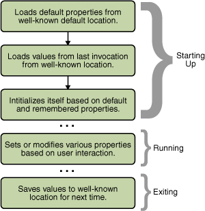

Properties are configuration values managed as key/value pairs. In each pair, the key and value are bothStringvalues. The key identifies, and is used to retrieve, the value, much as a variable name is used to retrieve the variable's value. For example, an application capable of downloading files might use a property named "download.lastDirectory" to keep track of the directory used for the last download.To manage properties, create instances of
java.util.Properties. This class provides methods for the following:
- loading key/value pairs into a
Propertiesobject from a stream,- retrieving a value from its key,
- listing the keys and their values,
- enumerating over the keys, and
- saving the properties to a stream.
For an introduction to streams, refer to the section I/O Streams in the Basic I/O lesson.
Propertiesextendsjava.util.Hashtable. Some of the methods inherited fromHashtablesupport the following actions:
- testing to see if a particular key or value is in the
Propertiesobject,- getting the current number of key/value pairs,
- removing a key and its value,
- adding a key/value pair to the
Propertieslist,- enumerating over the values or the keys,
- retrieving a value by its key, and
- finding out if the
Propertiesobject is empty.
The
Security Considerations: Access to properties is subject to approval by the current security manager. The example code segments in this section are assumed to be in standalone applications, which, by default, have no security manager. The same code in an applet may not work depending on the browser or viewer in which it is running. See Getting System Properties in the Applets trail for information about security restrictions on applets.Systemclass maintains aPropertiesobject that defines the configuration of the current working environment. For more about these properties, see System Properties. The remainder of this section explains how to use properties to manage application configuration.
The following figure illustrates how a typical application might manage its configuration data with aPropertiesobject over the course of its execution.
Starting Up- The actions given in the first three boxes occur when the application is starting up. First, the application loads the default properties from a well-known location into a
Propertiesobject. Normally, the default properties are stored in a file on disk along with the.classand other resource files for the application.Next, the application creates another
Propertiesobject and loads the properties that were saved from the last time the application was run. Many applications store properties on a per-user basis, so the properties loaded in this step are usually in a specific file in a particular directory maintained by this application in the user's home directory. Finally, the application uses the default and remembered properties to initialize itself.The key here is consistency. The application must always load and save properties to the same location so that it can find them the next time it's executed.
Running- During the execution of the application, the user may change some settings, perhaps in a Preferences window, and the
Propertiesobject is updated to reflect these changes. If the users changes are to be remembered in future sessions, they must be saved.Exiting- Upon exiting, the application saves the properties to its well-known location, to be loaded again when the application is next started up.
The following Java code performs the first two steps described in the previous section: loading the default properties and loading the remembered properties:First, the application sets up a default. . . // create and load default properties Properties defaultProps = new Properties(); FileInputStream in = new FileInputStream("defaultProperties"); defaultProps.load(in); in.close(); // create application properties with default Properties applicationProps = new Properties(defaultProps); // now load properties from last invocation in = new FileInputStream("appProperties"); applicationProps.load(in); in.close(); . . .Propertiesobject. This object contains the set of properties to use if values are not explicitly set elsewhere. Then the load method reads the default values from a file on disk nameddefaultProperties.Next, the application uses a different constructor to create a second
Propertiesobject,applicationProps, whose default values are contained indefaultProps. The defaults come into play when a property is being retrieved. If the property can't be found inapplicationProps, then its default list is searched.Finally, the code loads a set of properties into
applicationPropsfrom a file namedappProperties. The properties in this file are those that were saved from the application the last time it was invoked, as explained in the next section.
The following example writes out the application properties from the previous example usingProperties.store. The default properties don't need to be saved each time because they never change.TheFileOutputStream out = new FileOutputStream("appProperties"); applicationProps.store(out, "---No Comment---"); out.close();storemethod needs a stream to write to, as well as a string that it uses as a comment at the top of the output.
Once the application has set up itsPropertiesobject, the application can query the object for information about various keys and values that it contains. An application gets information from aPropertiesobject after start up so that it can initialize itself based on choices made by the user. ThePropertiesclass has several methods for getting property information:
contains(Object value)
containsKey(Object key)- Returns
trueif the value or the key is in thePropertiesobject.Propertiesinherits these methods fromHashtable. Thus they acceptObjectarguments, but onlyStringvalues should be used.getProperty(String key)
getProperty(String key, String default)- Returns the value for the specified property. The second version provides for a default value. If the key is not found, the default is returned.
list(PrintStream s)
list(PrintWriter w)- Writes all of the properties to the specified stream or writer. This is useful for debugging.
elements()
keys()
propertyNames()- Returns an
Enumerationcontaining the keys or values (as indicated by the method name) contained in thePropertiesobject. Thekeysmethod only returns the keys for the object itself; thepropertyNamesmethod returns the keys for default properties as well.stringPropertyNames()- Like
propertyNames, but returns aSet<String>, and only returns names of properties where both key and value are strings. Note that theSetobject is not backed by thePropertiesobject, so changes in one do not affect the other.size()- Returns the current number of key/value pairs.
A user's interaction with an application during its execution may impact property settings. These changes should be reflected in thePropertiesobject so that they are saved when the application exits (and calls thestoremethod). The following methods change the properties in aPropertiesobject:
setProperty(String key, String value)- Puts the key/value pair in the
Propertiesobject.remove(Object key)- Removes the key/value pair associated with key.
Note: Some of the methods described above are defined inHashtable, and thus accept key and value argument types other thanString. Always useStrings for keys and values, even if the method allows other types. Also do not invokeHashtable.setorHastable.setAllonPropertiesobjects; always useProperties.setProperty.